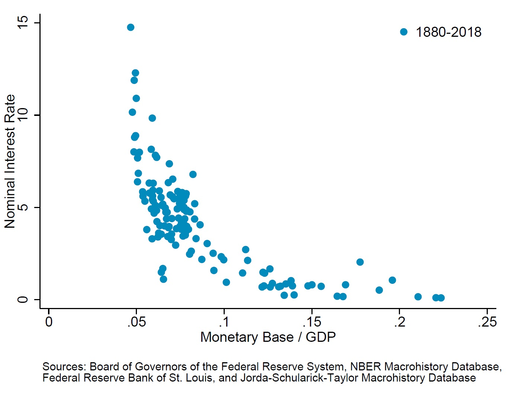

-
Lecture on Early Fiscal History of United States by Thomas Sargent,
different version
-
History of Macroeconomics by Thomas Sargent
-
Fiscal History of United States by Thomas Sargent and George Hall - 14 lectures
-
Ph.D Macroeconomics - 2nd year by Thomas Sargent - 9 lectures
-
Where to Draw Lines: Stability Versus Efficiency by Thomas Sargent, paper
- Micro Foundations for Macro and Monetary Economics, Lecture 1,
Lecture 2 by Randall Wright
-
Markets with Frictions by Randall Wright - 6 lectures
-
New Monetarist Economics: Models by Randall Wright
-
Statistical Modeling of Monetary Policy and It's Effects by Chris Sims, longer verion of his Novel Prize lecture
-
Game Theory by Mattew O Jackson, Yoav Shoham, and Kevin Leyton-Brown - 11 weeks lectures
-
Social and Economic Networks by Mattew O Jackson - 7 weeks lectures
-
Mathematical Methods for Economists by Rajiv Sethi - 12 lectures
- Public Economics Lectures - Ph.D 2nd year
by Raj Chetty - 28 lectures
- Asset Pricing, Part 1,
Part 2, by John Cochrane
Lecture Notes and Online Textbooks
- Stephen Williamson
Notes on Macroeconomic Theory (2006), other notes can be found on his website
- Dirk Kruger
Macroeconomic Theory, Consumption and Saving, Dynamic Fiscal Policy, Quantitative Macroeconomics
- Christopher D. Carroll
Ph.D macro
- Lutz Hendricks
Ph.D macro I,
Topics in Income and Wealth Distribution (Phd 2nd year),
other resources
- Benjamin S. Griffy
Ph.D macro II,
Quantitative Macro-Labor
- Franck Portier
Macroeconomics course materials (from undergrade to graduate, the problem sets are great)
- Randall Wright
Liquidity: A New Monetarist Perspective, Directed Search and Competitive Search Equilibrium: A Guided Tour
Micro Foundations for Macro and Monetary Economics
(Video 1,
Video 2)
- Miguel Faria-e-Castro
Ph.D macro II (based on material by Ricardo Lagos)
- Gianluca Violante
Ph.D macro II
- Eric Sims
undergraduate/master macroeconomics textbook,
lecture notes for 22 classes from 2010 (many overlaps)
- Simon Mongey
Advanced Macro II PhD,
Economic Analysis III (Undergraduate Honors) at U Chicago
Firm dynamics in frictional labor markets
(Video)
- Pierre-Olivier Weill & Ben Lester
OTC Market Theory
(Video 1,
Video 2)
- Josh Hendrickson
Notes on graduate macro including "Monetary Theory, History, and Policy"
- QuantEcon by Thomas J. Sargent and John Stachurski
Quantitative Economics with Python
Quantitative Economics with Julia
- Karl Whelan
Lecture Notes on Macroeconomics (undergraduate),
International Money and Banking, Master Macroecon 1, 2, Master Econometrics, Advanced Macroeconomics (undergraduate)
- Benjamin Moll
Lecture notes on Ph.D macro classes for 1st year and 2nd year and heterogeneous agent macro lectures
- Daron Acemoglu
Lecture notes for 33+ classes from 2007 to present (some overlaps)
- Jesús Fernández-Villaverde
Lecture notes for 8 different courses: Courses include global economic history, political economy of early America, computational methods, computing and estimating of dynamic general equilibrium models, Ph.D core macro economics, macreconomics with financial frictions and uncertainty shocks, and undergraduate macroeconomics.
- José Víctor Ríos Rull
Course materials for 40+ courses: Topics cover macroeconomics, public finance, labor, health
- David Andolfatto
Money & Monetary Policy (a graduate course materials)
Macroeconomic Theory and Policy,
Lecture notes for 9 different courses
- Cesar E. Tamayo
Ph.D 1 year micro, macro, econometrics with prelimary math, short notes on time series, intermediate Micro, undergraduate money and banking
- Martin Uribe, Stephanie Schmitt-Grohé & Michael Woodford
International Macroeconomics (undergraduate textbook and its lecture slide)
- Jón Steinsson
Undergraduate macroeconomics textbook and some graduate teaching materials
- Pablo Kurlat
Ph.D Macro Lecture Notes
- Thomas Winberry
Micro Data for Macro Models
- Ludvig Sinander
Lecture notes: Topics in mechanism design, Topics in game theory, Economic theory and methods, Econometrics II, Macroeconomics I
- Matt Shum
several classes on industrial organization
- Ariel Rubinstein
Provides free download for many of his books.
- John H. Cochrane
Course materials for the book "Asset Pricing" and
other finance/macro courses,
Books
Some notes on investment, time series, continuous time model and solving RBC model
- Scott Cunningham
Causal Inference: The Mixtape
- Paul Goldsmith-Pinkham
Applied Empirical Methods
- Bruce Hansen
Econometrics
- Masao Ogaki
Structural Macroeconometrics
- David M Kaplan
Introductory Econometrics: Description, Prediction, and Causality
Distributional and Nonparametric Econometrics
Data
